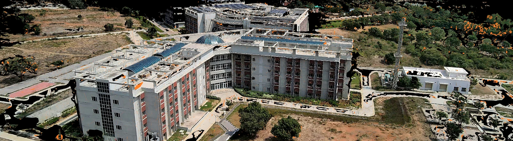

Capture to surface
Saved-session reconstruction, COLMAP/Open3D integration and VisFusion trials. Camera coverage and recovery become explicit checks.
From video to an inspectable 3D surface. GeoStreamFusion combines camera recovery, learned depth and reconstruction-aware frame selection to spend computation where it matters.
Research and engineering across phone captures, aerial scenes and nine dataset families.

ACTUAL RECONSTRUCTION / CAMPUS DETAILImage textures · Triangle surfaceDepth AbsRel
qualified AMvalley validation
Measured acceleration
three earlier capture comparisons
Admitted training images
nine dataset families
Sharpness alone is not enough. A new viewpoint can reveal a missing surface; a sharp but redundant image can add cost. The selector compares a candidate with the current map and the frame it might replace.
Calibrate and register views, check temporal coverage and recover missing camera segments. Tracking and dense frame admission have different responsibilities.
Maroon equations supervise the frame-utility and action blocks (2–3).
g_ADD(c | S) = F(S ∪ {c}) − F(S)g_SWAP(c, o | S) = F((S ∖ {o}) ∪ {c}) − F(S)g_KEEP(S) = 0Measure the surface-score change after adding a candidate or replacing an occupant. Reconstruct the alternatives under the same reference and depth version.
S is the selected frame set; c is the candidate; o is the occupant being replaced. F(S) is the surface F-score measured after fusion/checks (block 5). Positive gain means an improvement. This is measured utility supervision, not differentiation through a mesh extractor.
Step through capture, ADD/SWAP decisions, depth and fusion. Use Play/Pause or open the full walkthrough.
Open animated walkthrough ↗Separate depth accuracy, selection quality and runtime. Each comparison retains its own evaluation scope.
AbsRel decreased from 3.0752% to 2.2089% under the same qualified AMvalley sparse-anchor-fit protocol.
Data composition, initialization and training updates changed together. DA3 reference: 2.1125%. Depth improvement does not by itself establish mesh improvement.
The expanded checkpoint scores 0.3131 vs 0.2332 for its matched uniform control; it wins in 77% of evaluated variants.
DINO-middle remains stronger at 0.3406. The earlier learned checkpoint scored 0.3342 at a different kept-frame fraction. More training did not establish a better overall selector.
| Policy | Surface F ↑ |
|---|---|
| Uniform · matched budget | 0.2332 |
| Expanded learned selector | 0.3131 |
| DINO-middle · matched budget | 0.3406 |
Reference poses, predicted depth, TSDF surface score. Thresholds tuned on AMtown03. Variants share base scenes; these are not 100 independent scenes.
CASPAR and bounded stereo reduced measured reconstruction time across three earlier saved sessions.
One measurement per configuration, with internal quality checks. This is not an independent certification of identical metric mesh quality.
| Capture | Earlier | Accelerated | Ratio |
|---|---|---|---|
| A · 170532 | 452.64 | 222.03 | 2.04× |
| B · 170757 | 630.33 | 329.85 | 1.91× |
| C · 100642 | 311.90 | 150.35 | 2.07× |
Actual textured triangle geometry from the campus reconstruction. The model appears in pieces as it loads automatically. Rotate, pan and inspect it in any direction.
Loading the interactive model. Left drag: rotate freely · right drag: pan · scroll/pinch: zoom.
Reduced web mesh with a compressed texture atlas. The saved model includes patches from an earlier reconstruction; patches are not new measured surfaces. Remaining gaps and calibration uncertainty persist.
| Reconstruction method | Recorded time (min) | F@2% ↑ |
|---|---|---|
| Native 4K · stereo | 67.66 | Reference |
| DA3-assisted · dense reconstruction | 8.58 | 0.9533 |
| Student + fallback · 84 views | 14.41 | 0.8564 |
| Selected + fallback · 17 views | 8.30 | 0.7958 |
Reconstruction-stage timings: camera estimation, frame selection and final texturing are excluded from the dense runs; the 4K row measures stereo only. These are not end-to-end timings. F compares to the reconstructed 4K reference at 2% of robust scene extent, within the evaluation crop; it is not independent ground truth. The pictured patched model is a qualitative demonstration, not the metric reference.
149,637 unique admitted training RGB images, with protected sequence roles and source-specific geometry checks.
Preparation, usable supervision and optimizer coverage are recorded separately. The expanded queue verified final shard coverage across 12,586 utility shards.
Recorded completion: cumulative epoch 33, step 256,877. RGB admission does not imply measured depth for every image. LiDAR, SfM proxies and teacher predictions carry different evidence.
| Dataset family | Images |
|---|---|
| JB3D | 70,341 |
| UAVScenes | 54,343 |
| Tanks and Temples | 12,929 |
| M3ED | 3,848 |
| NTU VIRAL | 3,626 |
| UAVLight | 2,430 |
| KITTI | 1,048 |
| Dronescapes | 816 |
| MatrixCity | 256 |
| Total | 149,637 |
Saved-session reconstruction, COLMAP/Open3D integration and VisFusion trials. Camera coverage and recovery become explicit checks.
Recorder metadata, semantic filtering, colored meshes, GPU bundle adjustment and bounded stereo. DPVO/submap experiments expose geometry limits.
Compact depth models, LiDAR/teacher diagnosis, replay contracts, expanded data and remote CPU execution. Corrected-protocol depth error improves.
Contribution labels and online memory lead to a cascade test. The deeper branch rejects useful swaps, motivating better comparative utility.
Nine-family admission, expanded selector training, corruption evaluation, trained-selector video experiments and textured 4K reconstruction.
Common-map candidate/occupant comparisons, alternating depth and gain-label updates, and unseen-area evaluation at matched compute. Fully differentiable mesh training and reliable onboard online operation remain research goals.
Animated architecture walkthrough ↗ · Existing side-by-side comparison viewer ↗